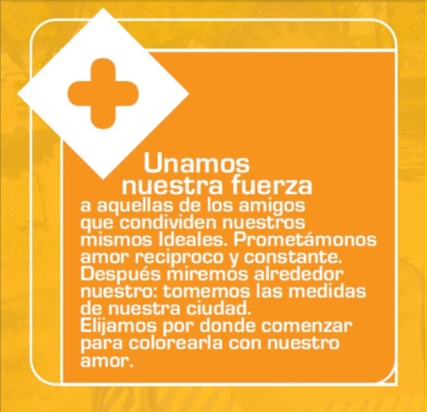

TU OPERACIÓN DE PAZ
Sumar fuerzas
Unamos nuestra fuerza a quienes comparten ideales de paz y elijamos por dónde comenzar a colorear la ciudad con amor.
MATEMÁTICA · PARA LA PAZ
Lanza el dado y descubre una operación concreta para multiplicar el amor, compartir, no dejar solo a nadie y construir fraternidad universal.

Unamos nuestra fuerza a quienes comparten ideales de paz y elijamos por dónde comenzar a colorear la ciudad con amor.
LAS SEIS OPERACIONES
Pulsa una tarjeta para convertir cada signo matemático en una acción concreta de paz.
“Cuando sumamos, restamos soledad, multiplicamos amor y compartimos con todos, la ciudad se colorea de paz.”
Sumar · Compartir · Multiplicar